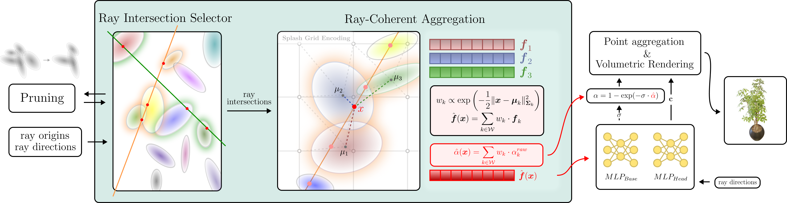
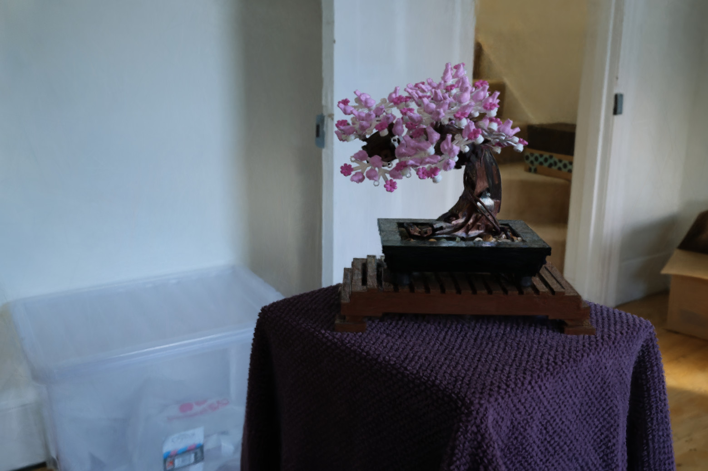
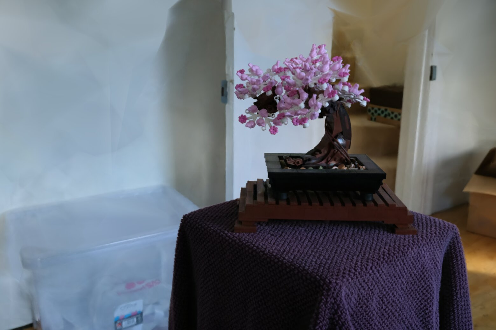
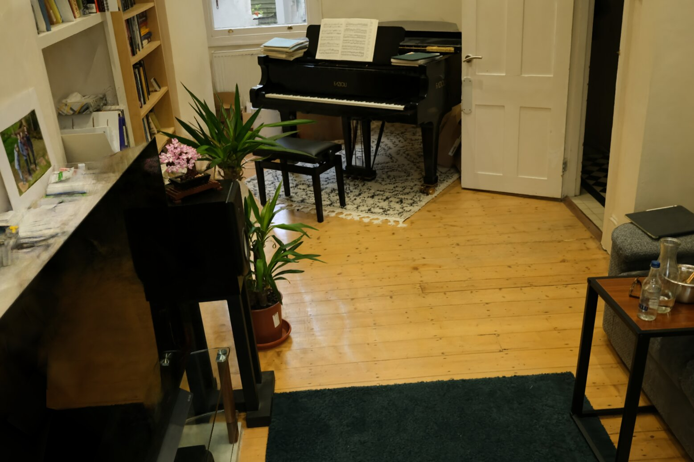
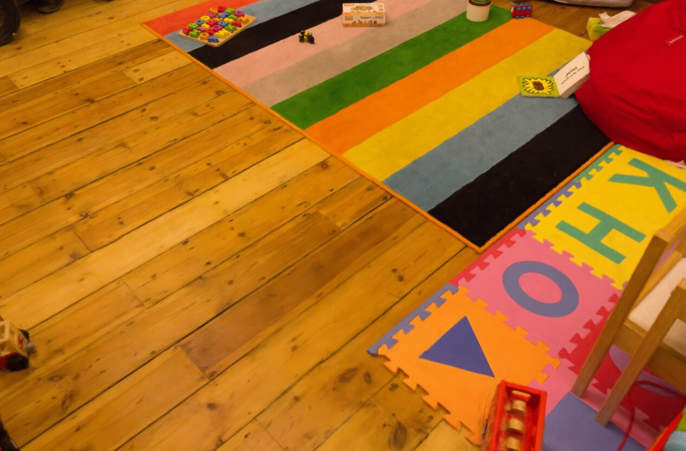
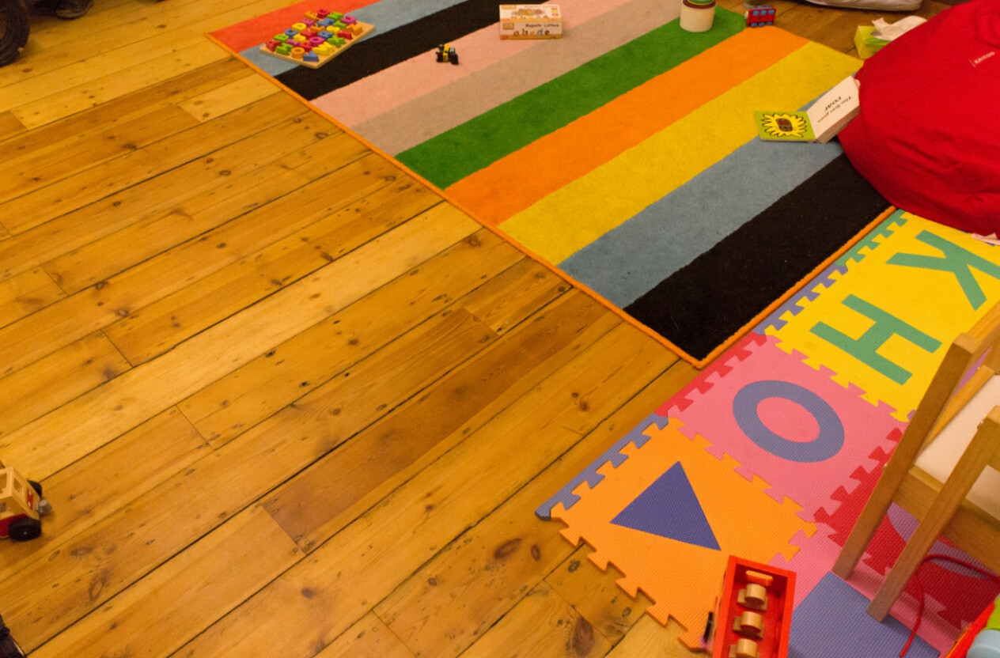
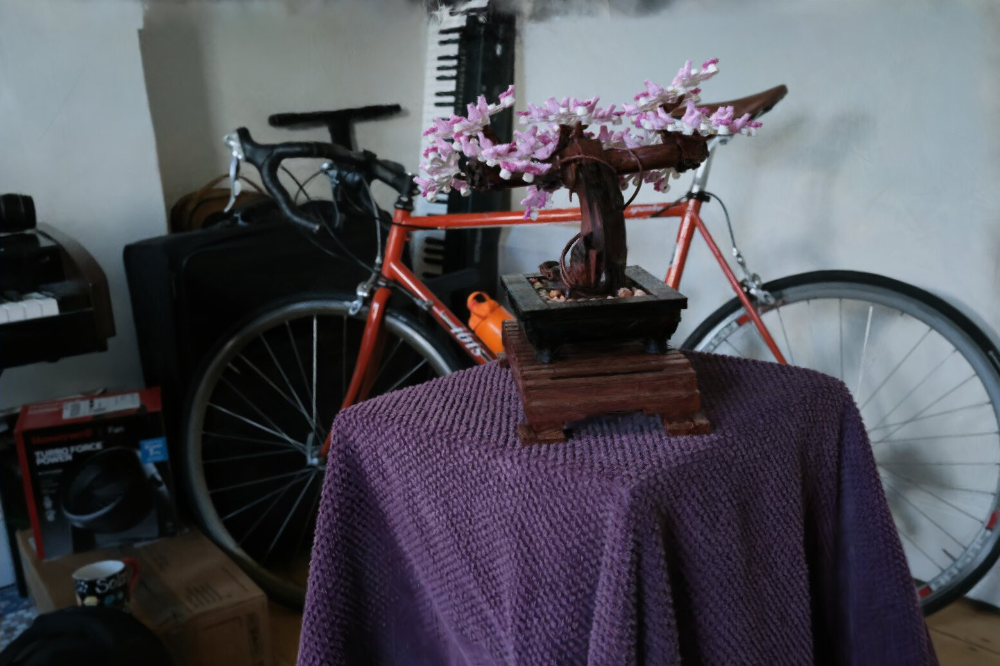
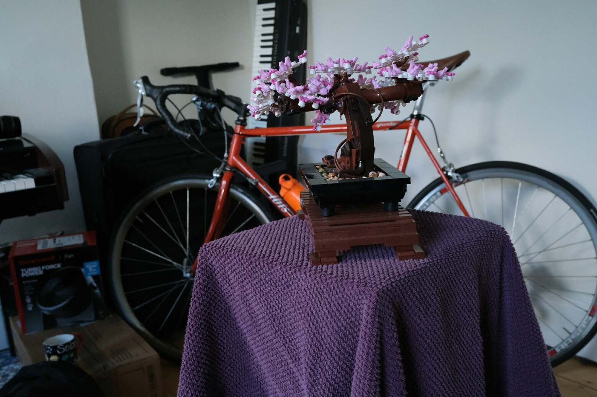

Arxiv

Code
Method video
Neural Radiance Fields achieve high-fidelity scene representation but suffer from costly training and rendering, while 3D Gaussian splatting offers real-time performance with strong empirical results. Recently, solutions that harness the best of both worlds by using Gaussians as proxies to guide neural field evaluations, still suffer from significant computational inefficiencies. They typically rely on stochastic volumetric sampling to aggregate features, which severely limits rendering performance. To address this issue, a novel framework named IRIS (Intersection-aware Ray-based Implicit Editable Scenes) is introduced as a method designed for efficient and interactive scene editing. To overcome the limitations of standard ray marching, an analytical sampling strategy is employed that precisely identifies interaction points between rays and scene primitives, effectively eliminating empty space processing. Furthermore, to address the computational bottleneck of spatial neighbor lookups, a continuous feature aggregation mechanism is introduced that operates directly along the ray. By interpolating latent attributes from sorted intersections, costly 3D searches are bypassed, ensuring geometric consistency, enabling high-fidelity, real-time rendering, and flexible shape editing.

Our hybrid rendering pipeline, IRIS, parameterizes the scene as a set of unstructured Neural Anchors. These explicit 3D Gaussian primitives act as spatial carriers for learnable high-dimensional latent features, effectively binding implicit neural representations to movable geometry. The scene is formally defined as:
\( \mathcal{P} = \{(\mathcal{N}(\boldsymbol{\mu}_i, \boldsymbol{\Sigma}_i), \omega_i, \boldsymbol{f}_i)\}_{i=1}^N \)
To overcome the computational inefficiency of standard stochastic volumetric sampling, we introduce the Ray Intersection Selector (RIS). Instead of probabilistically querying empty space, RIS employs an analytical ray-intersection strategy to determine precise interaction points between camera rays and scene primitives. This ensures that every evaluation contributes directly to the surface reconstruction.
To transition from discrete primitives to a continuous neural field, we bypass computationally heavy 3D K-Nearest Neighbors (KNN) lookups by introducing a Ray-Coherent Aggregation (RCA) mechanism. RCA acts as a vectorized, 1D approximated spatial search directly along the ray using a sliding window \( \mathcal{W}_k \).
For every valid neighbor in the window, aggregation weights \( w_{kj} \) are obtained via a Softmax operation based on the Mahalanobis distance \( l_{kj} \). A locally smooth feature vector \( \hat{\boldsymbol{f}}(\boldsymbol{x}_k) \) and volumetric opacity \( \hat{\alpha}(\boldsymbol{x}_k) \) are synthesized through a weighted summation:
\( \hat{\boldsymbol{f}}(\boldsymbol{x}_k) = \sum_{j \in \mathcal{W}_k} w_{kj}\boldsymbol{f}_j, \quad \hat{\alpha}(\boldsymbol{x}_k) = \sum_{j \in \mathcal{W}_k} w_{kj}\alpha_{kj}^{raw} \)
Once the locally consistent features are aggregated via RCA, a shallow MLP \( \mathcal{F}_\Theta \) is employed to decode the implicit scene attributes – view-dependent color \( \boldsymbol{c}_k \) and material density \( \sigma_{mlp} \):
\( (\sigma_{mlp}, \boldsymbol{c}_k) = \mathcal{F}_\Theta\Bigl(\hat{\boldsymbol{f}}(\boldsymbol{x}_k), \gamma(\boldsymbol{d})\Bigr) \)
To prevent artifacts typical of unbounded fields, the neural density is spatially constrained by the explicit Gaussian structure. The final pixel color is accumulated using point-based volumetric rendering:
\( \boldsymbol{C}(\boldsymbol{r}) = \sum_{k=1}^K T_k \alpha_k \boldsymbol{c}_k \)
By explicitly modelling the interaction between rays and neural-encoded Gaussians, our framework offers three distinct advantages:
IRIS, compared to other editable NeRF method - EKS, produces results without ghosting artifacts, maintaining superior fidelity and clean geometry. Moreover, while other methods clip objects exiting the training volume, IRIS maintains full rendering integridy by dynamically sampling explicit geometry independent of static global bounds.







IRIS achieves high-quality novel view synthesis for static scenes on par with state-of-the-art static reconstruction methods.
@misc{wilczynski2026iris,
title={IRIS: Intersection-aware Ray-based Implicit Editable Scenes},
author={Grzegorz Wilczyński and Mikołaj Zieliński and Krzysztof Byrski and Joanna Waczyńska and Dominik Belter and Przemysław Spurek},
year={2026},
eprint={2603.15368},
archivePrefix={arXiv},
primaryClass={cs.CV},
url={https://arxiv.org/abs/2603.15368},
}